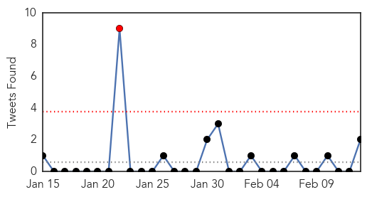
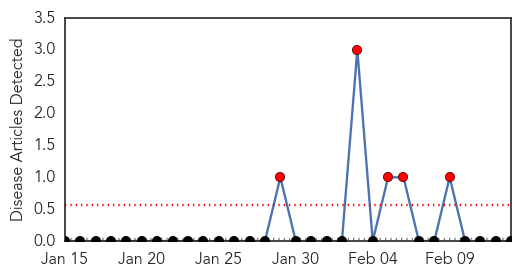

Unknown
30-Day Web Trend
0 alerts, 13 warnings
30-Day Twitter Trend
1 alerts, 0 warnings

Article Locations
Article Confidences
Top Articles:
- 0.987
- Boy becomes Cambodia’s first bird flu death
- 0.932
- HPV Disease Not Killed With Disinfectants; Hospitals May Need To Change Cleaning Policy
- 0.928
- Manitoba has first case of pig virus
- 0.917
- Chicago Tribune
- 0.917
- Chicago Tribune
- 0.917
- Chicago Tribune
- 0.917
- Chicago Tribune
- 0.917
- Chicago Tribune
- 0.917
- Chicago Tribune
- 0.917
- Chicago Tribune
- 0.917
- Chicago Tribune
- 0.917
- Chicago Tribune
- 0.917
- Chicago Tribune
- 0.917
- Chicago Tribune
- 0.917
- Chicago Tribune
- 0.917
- Chicago Tribune
- 0.917
- Chicago Tribune
- 0.917
- Chicago Tribune
- 0.914
- State health officials report 11 more flu deaths in past week, toll now at 44 since start of season
- 0.910
- The world windows to Thailand
- 0.902
- Manitoba sees first case of pig virus; no risk to humans, other animals
- 0.891
- (Petri)Dish: Polio in the Holy Land
- 0.884
- Hong Kong Reports Fifth H7N9 Bird Flu Case — Naharnet
- 0.866
- Man charged in Tennessee package explosion that killed his in-laws
- 0.866
- MEXICAN PRESIDENT ENRIQUE PENA NIETO WILL ASK SUPREME COURT TO DECIDE ON TV DISPUTE
- 0.866
- UK says suspicious parcels have 'hallmarks of N.Ireland terrorism'
- 0.866
- Orchard Harvest Corporation harvesting machinery is shown at the 47th Annual World Ag Expo in Tulare, California.
- 0.866
- 18-year-old Rohingya Akram, who cannot walk, rests on a makeshift bed near Songkhla, close to Thailand's border with Malaysia
- 0.840
- Hong Kong reports fifth H7N9 bird flu case
- 0.822
- Doctors Fail to Spot COPD symptoms in Thousands of Patients: Study
- 0.764
- About 300 Kalamazoo Central students, staff to be tested for TB exposure
- 0.738
- Health warning - Glentunnel Selwyn River
- 0.724
- Torquay cafe closes its doors because of suspected salmonella outbreak
- 0.662
- Fish sold in Niles sickens two
- 0.635
- Regis College Celebrates 1st Master's Degree of Science in Nursing from State University of Haiti
- 0.629
- Regis College Celebrates 1st Master's Degree of Science in Nursing from State University of Haiti
- 0.615
- Tokomaru's boil water notice lifted
- 0.603
- Guinea: Ill-Equipped Maternity Wards
- 0.576
- Russian AgriMin emphasizes need to reduce wild boar population in Latvia :: The Baltic Course
- 0.561
- HSE approves recruitment of new nurses over Tullamore hospital crisis
- 0.553
- Autoimmune attack behind some cases of schizophrenia
- 0.551
- Mission Health responds to medical needs of rural communities
- 0.551
- My friend, waging holy war in Syria
- 0.551
- Paris mayoral hopeful wants immigrant ID cards ‘like in New York'’
- 0.551
- Iconic French newspaper Libération in crisis as editor-in-chief steps down
- 0.551
- Hollande seeking to seduce exiled French entrepreneurs
- 0.551
- Belgium gives dying children right to euthanasia
- 0.551
- CAR vigilante ‘chief’ warns president against crackdown
- 0.551
- Editorial: Salahudine, a Frenchman lost to jihad
- 0.551
- FRANCE 24 EXCLUSIVE: Confessions of a French jihadist in Syria
Showing top 50 articles...
Top Tweets:
- 0.931
- RT: Recent emergence of H7N9 flu virus & Middle East Respiratory Syndrome underscore infectious disease as serious global thr…
- 0.931
- RT: Recent emergence of H7N9 flu virus & Middle East Respiratory Syndrome underscore infectious disease as serious global thr…
Mold/Fungal
30-Day Web Trend
5 alerts, 0 warnings

30-Day Twitter Trend
0 alerts, 0 warnings

Article Locations

Article Confidences

Top Articles:
-
No articles found for Feb 13, 2014
Top Tweets:
-
No tweets found for Feb 13, 2014